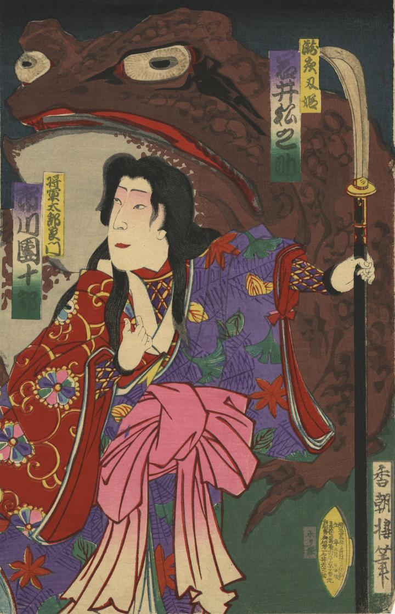

← 图鉴索引

瀧夜叉姫の背後に大蝦蟇が現われている。
著作者：香朝樓／出典：親書誌：U426_nichibunken_0398：相馬平氏二代譚；ソウマ ヘイシ ニダイバナシ／日付：2015／資源識別子：U426_nichibunken_0398_0001_0000
Copyright (c)2010- International Research Center for Japanese Studies, Kyoto, Japan. All rights reserved.